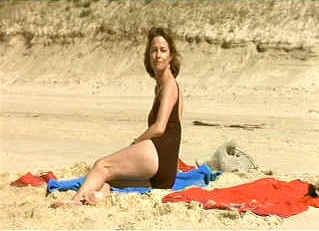

| Under
the Sand (SE)/ A, B+ |
| Fox
Lorber/2000/95/ANA 1.85 |
Under the Sand moves with swift
emotional force that belies the raw material. The intimate portrait
scrutinizes the internal pain and external élan of Marie Drillon
with exquisite understanding.
Jean Drillon is delivered with natural power by Bruno Cremer.
 |
| Marie
looks out at the ocean. ©Fox Lorber |
This is perhaps the video transfer released on DVD
by Fox Lorber. Excellent color saturation and a very film-like
English subtitles are easy to read The Dolby Digital 5:1 surround
encoding is up at least 10dB. Otherwise, it is clean with a measure of
surround information delivered accurately. The music is appropriately
lush and moody. Special edition includes an introspective look at
the project from Charlotte Rampling. A audio commentary delivered in
French by Francois Ozon and co-writer Emmanuelle Bernheim includes
an English subtitle track. Excellent give and take between the
participants revealing the ambiguities and clarity of the plot.
|
|
|
|

Selections from the Feature
Archive include articles on
Akira Kurosawa, Blonde
Bimbos,
Frank
Darabont, Steven
Culp, John
Herzfeld or Vietnam:
The Hollywood Pariah, and many more....
The
Bitch Brigade

A line-up of lean-lipped
actresses who marched through Hollywood in a high heeled goose step
armed with razor sharp dialogue. Click on the image to read all about
them.

 Gary
Morris's insightful publication Bright Lights Film Journal turns
the celluloid in films from a unique perspective. Click on the image
above for more pure movie views. Gary
Morris's insightful publication Bright Lights Film Journal turns
the celluloid in films from a unique perspective. Click on the image
above for more pure movie views.
Nearly 40 key software and hardware
companies representing leading consumer electronics giants, major movie
studios home video and music video units have joined forces to establish
the DVD Video Group.

Images is a non-commercial Web site created for everyone who enjoys
movies and popular culture. Images is published quarterly; however, new
reviews will appear each week, so check back often.
 Jim
Doolittle Jim
Doolittle
ISF Instructor. Premier calibrator and expert front projection system
setup technician in the Boston area.
Excellent resource with DVD reviews,
forum and more. Home of the DVD Savant.

A
Star is Born/A,B
Judy Garland is brilliant in the great Hollywood tale of one star on
the rise and another sliding into the abyss. James Mason is wonderful
alongside Judy.
|